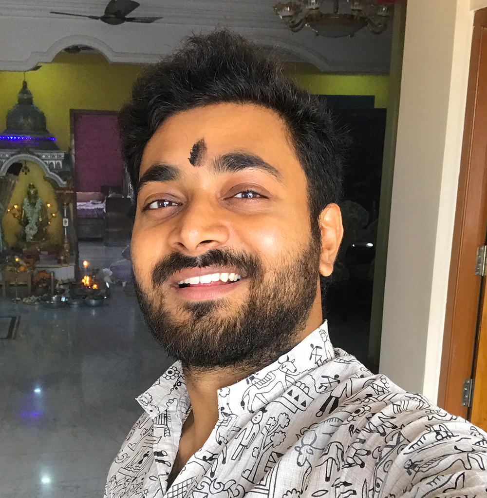

B. Tech in Computer Science and Engineering
Ramaiah University of Applied Sciences, Bangalore
CGPA: 7.78
Computer Science Graduate | AI ML Enthusiast | Pythoneer
I am an Engineering Graduate. I pursued my Bachelor's Degree in Computer Science. I am passionate about coding and machine learning. I am always enthusiastic about new technologies and eager to learn new skills and broaden my knowledge. In my spare time, I make videos on YouTube. Traveling and exploring places is also a part of my life.
Ramaiah University of Applied Sciences, Bangalore
CGPA: 7.78
Wipro, Chennai
Completed Multiple Trainings and got Certified. Completed TopCoder Assignments.
Online
Completed Multiple certifications on Python, Statistics, Mathematics, Deep Learning etc.
Online
Completed AI ML Certification from Wipro, which included Python Programming assignments and Machine Learning Assignments
Bangalore
IoT using Adreno to measure live temperature of the ambient atmosphere using temperature sensors and to transfer the sensed data and plot it in the hosting website as a graph for data analysis. The knowledge of adreno board, temperature sensors and bread board are required as a pre-requisite.
Bangalore
An app that is designed and built in android studio, which provides all the details of the political parties, leaders and current political news. Through this app, the registered user can also cast their vote. The development of the app required knowledge of web development skills such as HTML, CSS, XML and PHP. Also the skills for android studio was required.
Bangalore
To design and analyse the performance of various bio-inspired algorithms and compare them with trivial algorithms to solve real world issues of wireless sensor networks.
This is a Web Scrapper built using Python and Flask Framework. It scraps Flipkart's website and shows all the user names, reviews, ratings, and descriptions given by that user. This program is deployed in Heroku Platform.
This web scapper scraps data from MonsterIndia website. It scraps all the Job related details. Built using Selenium and integrated with MongoDB.